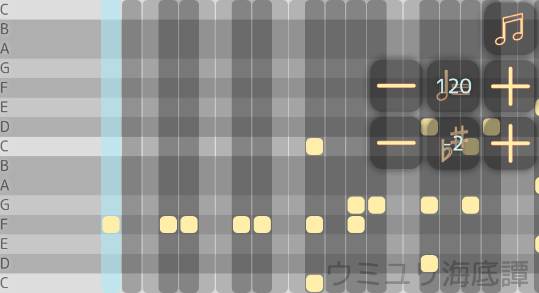
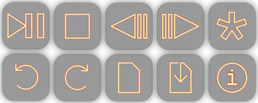
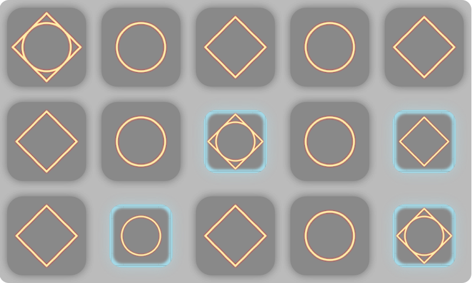

各部説明
表示部
再生カーソル
譜面を再生する位置を表示する
音程編集で編集するセルの指定にも用いる
ノート
音程の指定に用いる
セルに打ち込んで使用する
セル
ノートを譜面に配置するためのもの
通常ノートを打ち込んで使用する
音の長さは四分音符であるがラッパーを用いて変えることができる
ノートを打ち込まないと休符として扱われる
ラッパー
より細かい音符を使いたいときに使う
セルまたはラッパーを内包して使用する
ラッパーの中にセルを入れるとセルの音の長さがその個数だけ等分される
セルを内包しないと休符として扱われるが非推奨→セル
120
BPM
譜面の速度を実数で指定する
隣接するボタンでも調整できる
-2
調
譜面の調を整数で指定する
隣接するボタンでも調整できる
操作部
再生/一時停止 [スペースキー]
譜面を再生/一時停止する
音程編集モードでの再生時は再生カーソルが画面中央に固定される
停止
再生を停止して再生カーソルを先頭に移動する
コマ戻し[←キー]
再生カーソルを一つ前のセルに移動する
音程編集モードのときに使用すると再生カーソルが画面中央に来る
コマ送り[→キー]
再生カーソルを一つ後のセルに移動する
音程編集モードのときに使用すると再生カーソルが画面中央に来る
モード切り替え [タブキー]
編集モードを切り替える (音程編集←→リズム編集)
切り替えるとアイコンが少し回転する
取り消し[Ctrl+Z]
直前の音程編集リズム編集の操作を取り消す
上限はデフォルトで128回
(上級: localStorage.ur_Maxから指定)
やり直し[Ctrl+Shift+Z]
直前の音程編集リズム編集の操作を取り消しをやり直す
上限はデフォルトで128回
(上級: localStorage.ur_Maxから指定)
開く
保存したデータの一覧を開く
保存
現在開いている譜面を保存する
初回は名前の入力が必要
𝚒
情報表示バージョン表示など
入力部
キーボード[左上から QWERT ASDFG ZXCVB]
現在選択しているセルのノートを編集する
音程編集モードのときのみ表示される
再生中は操作するとセルの変更はされず音のみが出る
ページを一番下までスクロールすると練習しやすい
 クリップボード
クリップボード
編集カーソルが指している位置または選択範囲を編集する
リズム編集モードのときのみ表示される
カット
コピー
ペースト